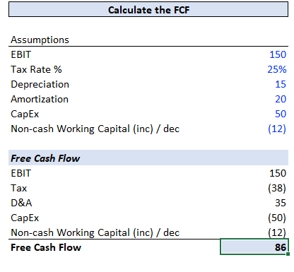
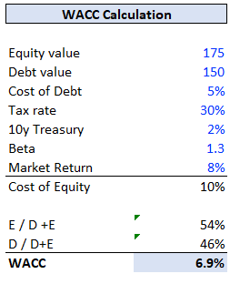
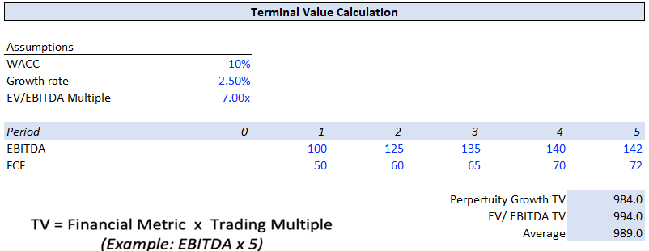
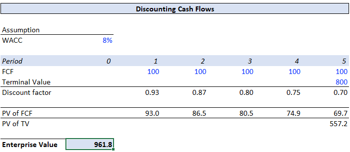
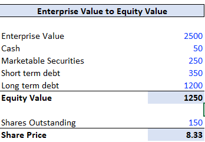
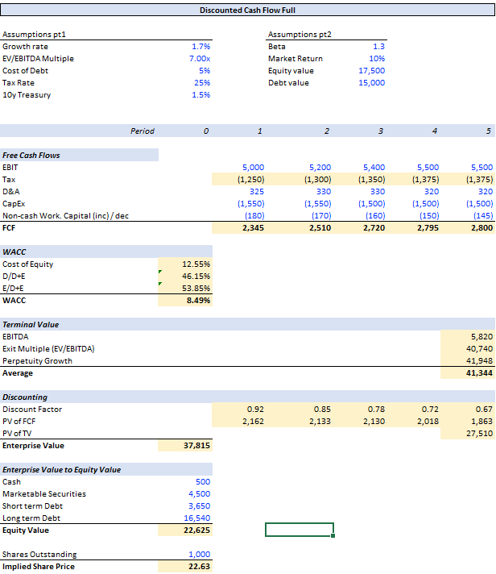

End-to-end DCF: Forecast Free Cash Flow → WACC → Terminal Value (Gordon & Exit Multiple) → Discount to Present → EV → Equity Value → Implied Share Price
5 Years
Explicit FCF forecast horizon
Dual TV
Perpetuity + Exit Multiple
WACC
CAPM cost of equity + after-tax cost of debt
Model Screenshots

Free Cash Flow

Weighted Average Cost of Capital

Terminal Value: Gordon Growth & Exit EV/EBITDA

Discounting cash flows & terminal value to PV

EV → Equity Value → Implied Share Price

Full and finalized DCF
Key Features
Forecasted Free Cash Flow: 5 year explicit forecast using EBIT(1-T), add-backs for non-cash D&A, and explicit Capex/ΔNWC.
WACC from market inputs: CAPM (r_f + β (R_m − r_f)) for cost of equity, after-tax cost of debt (r_d(1−T)), weighted by target capital structure.
Two terminal value approaches: Gordon Growth (TV = FCFn+1 / (WACC − g)) and Exit Multiple (EV/EBITDA), with option to average or bracket a range.
Clean discounting logic: build discount factors and present values for each year; PV of terminal value added to PV of explicit period.
EV to Equity bridge: net debt adjustments (cash & equivalents, marketable securities, short- & long-term debt) to get equity value and per-share price.
Modeling notes: supports mid-year convention, sensitivity tables for WACC & g, and sanity checks on TV weight vs EV.